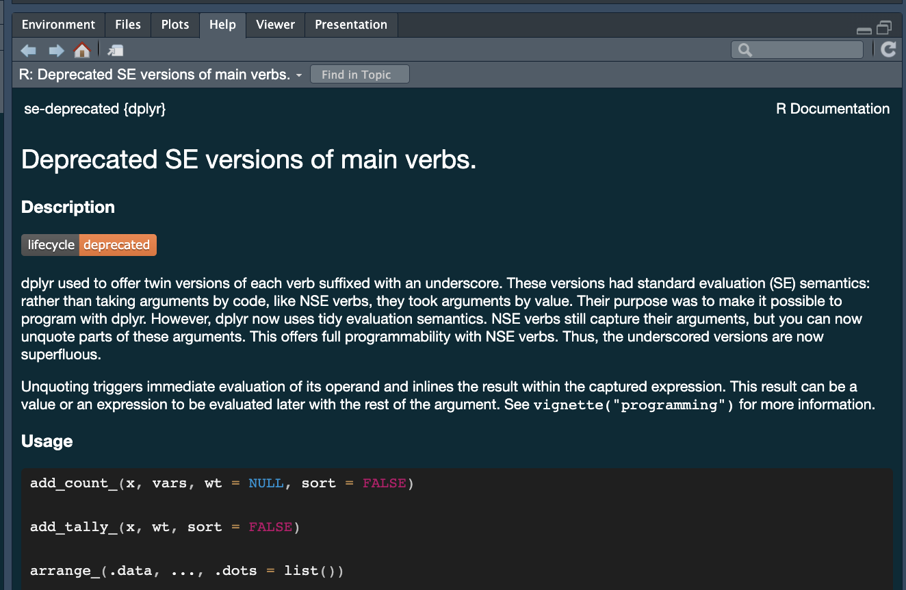
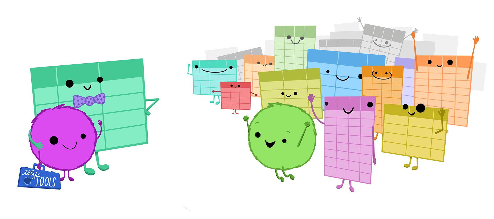
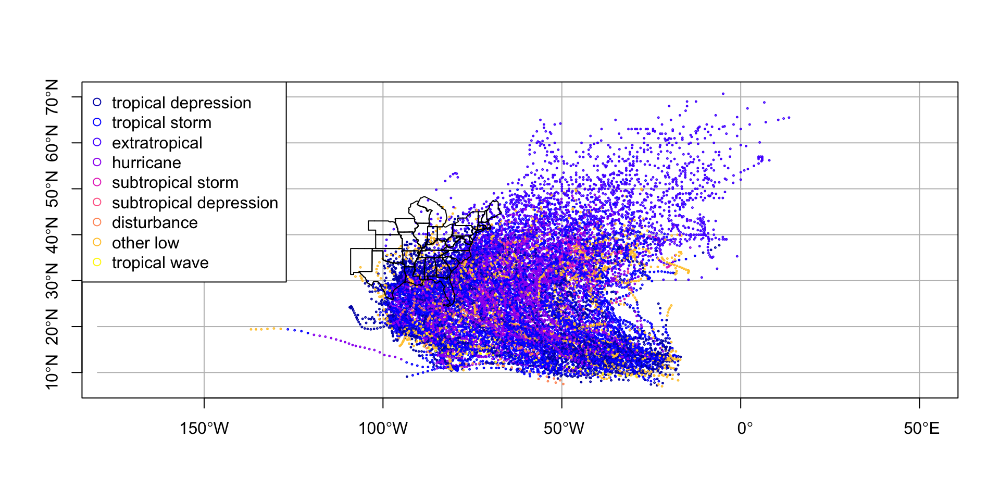
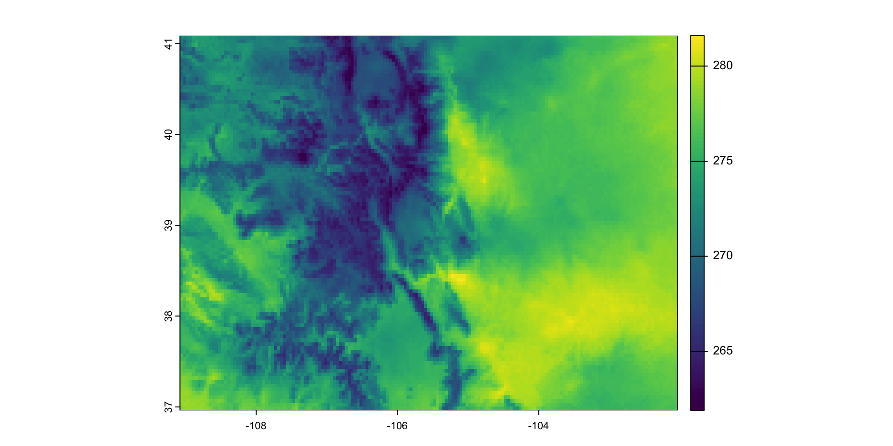

library(tidyverse)
lsf.str("package:dplyr")
#> %>% : function (lhs, rhs)
#> across : function (.cols, .fns, ..., .names = NULL, .unpack = FALSE)
#> add_count : function (x, ..., wt = NULL, sort = FALSE, name = NULL, .drop = deprecated())
#> add_count_ : function (x, vars, wt = NULL, sort = FALSE)
#> add_row : function (.data, ..., .before = NULL, .after = NULL)
#> add_rownames : function (df, var = "rowname")
#> add_tally : function (x, wt = NULL, sort = FALSE, name = NULL)
#> add_tally_ : function (x, wt, sort = FALSE)
#> all_equal : function (target, current, ignore_col_order = TRUE, ignore_row_order = TRUE,
#> convert = FALSE, ...)
#> all_of : function (x)
#> all_vars : function (expr)
#> anti_join : function (x, y, by = NULL, copy = FALSE, ...)
#> any_of : function (x, ..., vars = NULL)
#> any_vars : function (expr)
#> arrange : function (.data, ..., .by_group = FALSE)
#> arrange_ : function (.data, ..., .dots = list())
#> arrange_all : function (.tbl, .funs = list(), ..., .by_group = FALSE, .locale = NULL)
#> arrange_at : function (.tbl, .vars, .funs = list(), ..., .by_group = FALSE, .locale = NULL)
#> arrange_if : function (.tbl, .predicate, .funs = list(), ..., .by_group = FALSE, .locale = NULL)
#> as_data_frame : function (x, ...)
#> as_label : function (x)
#> as_tibble : function (x, ..., .rows = NULL, .name_repair = c("check_unique", "unique",
#> "universal", "minimal"), rownames = pkgconfig::get_config("tibble::rownames",
#> NULL))
#> as.tbl : function (x, ...)
#> auto_copy : function (x, y, copy = FALSE, ...)
#> bench_tbls : function (tbls, op, ..., times = 10)
#> between : function (x, left, right)
#> bind_cols : function (..., .name_repair = c("unique", "universal", "check_unique",
#> "minimal"))
#> bind_rows : function (..., .id = NULL)
#> c_across : function (cols)
#> case_match : function (.x, ..., .default = NULL, .ptype = NULL)
#> case_when : function (..., .default = NULL, .ptype = NULL, .size = NULL)
#> changes : function (x, y)
#> check_dbplyr : function ()
#> coalesce : function (..., .ptype = NULL, .size = NULL)
#> collapse : function (x, ...)
#> collect : function (x, ...)
#> combine : function (...)
#> common_by : function (by = NULL, x, y)
#> compare_tbls : function (tbls, op, ref = NULL, compare = equal_data_frame, ...)
#> compare_tbls2 : function (tbls_x, tbls_y, op, ref = NULL, compare = equal_data_frame, ...)
#> compute : function (x, ...)
#> consecutive_id : function (...)
#> contains : function (match, ignore.case = TRUE, vars = NULL)
#> copy_to : function (dest, df, name = deparse(substitute(df)), overwrite = FALSE,
#> ...)
#> count : function (x, ..., wt = NULL, sort = FALSE, name = NULL)
#> count_ : function (x, vars, wt = NULL, sort = FALSE, .drop = group_by_drop_default(x))
#> cross_join : function (x, y, ..., copy = FALSE, suffix = c(".x", ".y"))
#> cumall : function (x)
#> cumany : function (x)
#> cume_dist : function (x)
#> cummean : function (x)
#> cur_column : function ()
#> cur_data : function ()
#> cur_data_all : function ()
#> cur_group : function ()
#> cur_group_id : function ()
#> cur_group_rows : function ()
#> current_vars : function (...)
#> data_frame : function (...)
#> db_analyze : function (con, table, ...)
#> db_begin : function (con, ...)
#> db_commit : function (con, ...)
#> db_create_index : function (con, table, columns, name = NULL, unique = FALSE, ...)
#> db_create_indexes : function (con, table, indexes = NULL, unique = FALSE, ...)
#> db_create_table : function (con, table, types, temporary = FALSE, ...)
#> db_data_type : function (con, fields)
#> db_desc : function (x)
#> db_drop_table : function (con, table, force = FALSE, ...)
#> db_explain : function (con, sql, ...)
#> db_has_table : function (con, table)
#> db_insert_into : function (con, table, values, ...)
#> db_list_tables : function (con)
#> db_query_fields : function (con, sql, ...)
#> db_query_rows : function (con, sql, ...)
#> db_rollback : function (con, ...)
#> db_save_query : function (con, sql, name, temporary = TRUE, ...)
#> db_write_table : function (con, table, types, values, temporary = FALSE, ...)
#> dense_rank : function (x)
#> desc : function (x)
#> dim_desc : function (x)
#> distinct : function (.data, ..., .keep_all = FALSE)
#> distinct_ : function (.data, ..., .dots, .keep_all = FALSE)
#> distinct_all : function (.tbl, .funs = list(), ..., .keep_all = FALSE)
#> distinct_at : function (.tbl, .vars, .funs = list(), ..., .keep_all = FALSE)
#> distinct_if : function (.tbl, .predicate, .funs = list(), ..., .keep_all = FALSE)
#> distinct_prepare : function (.data, vars, group_vars = character(), .keep_all = FALSE, caller_env = caller_env(2),
#> error_call = caller_env())
#> do : function (.data, ...)
#> do_ : function (.data, ..., .dots = list())
#> dplyr_col_modify : function (data, cols)
#> dplyr_reconstruct : function (data, template)
#> dplyr_row_slice : function (data, i, ...)
#> ends_with : function (match, ignore.case = TRUE, vars = NULL)
#> enexpr : function (arg)
#> enexprs : function (..., .named = FALSE, .ignore_empty = c("trailing", "none", "all"),
#> .ignore_null = c("none", "all"), .unquote_names = TRUE, .homonyms = c("keep",
#> "first", "last", "error"), .check_assign = FALSE)
#> enquo : function (arg)
#> enquos : function (..., .named = FALSE, .ignore_empty = c("trailing", "none", "all"),
#> .ignore_null = c("none", "all"), .unquote_names = TRUE, .homonyms = c("keep",
#> "first", "last", "error"), .check_assign = FALSE)
#> ensym : function (arg)
#> ensyms : function (..., .named = FALSE, .ignore_empty = c("trailing", "none", "all"),
#> .ignore_null = c("none", "all"), .unquote_names = TRUE, .homonyms = c("keep",
#> "first", "last", "error"), .check_assign = FALSE)
#> eval_tbls : function (tbls, op)
#> eval_tbls2 : function (tbls_x, tbls_y, op)
#> everything : function (vars = NULL)
#> explain : function (x, ...)
#> expr : function (expr)
#> failwith : function (default = NULL, f, quiet = FALSE)
#> filter : function (.data, ..., .by = NULL, .preserve = FALSE)
#> filter_ : function (.data, ..., .dots = list())
#> filter_all : function (.tbl, .vars_predicate, .preserve = FALSE)
#> filter_at : function (.tbl, .vars, .vars_predicate, .preserve = FALSE)
#> filter_if : function (.tbl, .predicate, .vars_predicate, .preserve = FALSE)
#> first : function (x, order_by = NULL, default = NULL, na_rm = FALSE)
#> full_join : function (x, y, by = NULL, copy = FALSE, suffix = c(".x", ".y"), ..., keep = NULL)
#> funs : function (..., .args = list())
#> funs_ : function (dots, args = list(), env = base_env())
#> glimpse : function (x, width = NULL, ...)
#> group_by : function (.data, ..., .add = FALSE, .drop = group_by_drop_default(.data))
#> group_by_ : function (.data, ..., .dots = list(), add = FALSE)
#> group_by_all : function (.tbl, .funs = list(), ..., .add = FALSE, .drop = group_by_drop_default(.tbl))
#> group_by_at : function (.tbl, .vars, .funs = list(), ..., .add = FALSE, .drop = group_by_drop_default(.tbl))
#> group_by_drop_default : function (.tbl)
#> group_by_if : function (.tbl, .predicate, .funs = list(), ..., .add = FALSE, .drop = group_by_drop_default(.tbl))
#> group_by_prepare : function (.data, ..., .add = FALSE, .dots = deprecated(), add = deprecated(),
#> error_call = caller_env())
#> group_cols : function (vars = NULL, data = NULL)
#> group_data : function (.data)
#> group_indices : function (.data, ...)
#> group_indices_ : function (.data, ..., .dots = list())
#> group_keys : function (.tbl, ...)
#> group_map : function (.data, .f, ..., .keep = FALSE)
#> group_modify : function (.data, .f, ..., .keep = FALSE)
#> group_nest : function (.tbl, ..., .key = "data", keep = FALSE)
#> group_rows : function (.data)
#> group_size : function (x)
#> group_split : function (.tbl, ..., .keep = TRUE)
#> group_trim : function (.tbl, .drop = group_by_drop_default(.tbl))
#> group_vars : function (x)
#> group_walk : function (.data, .f, ..., .keep = FALSE)
#> grouped_df : function (data, vars, drop = group_by_drop_default(data))
#> groups : function (x)
#> id : function (.variables, drop = FALSE)
#> ident : function (...)
#> if_all : function (.cols, .fns, ..., .names = NULL)
#> if_any : function (.cols, .fns, ..., .names = NULL)
#> if_else : function (condition, true, false, missing = NULL, ..., ptype = NULL, size = NULL)
#> inner_join : function (x, y, by = NULL, copy = FALSE, suffix = c(".x", ".y"), ..., keep = NULL)
#> intersect : function (x, y, ...)
#> is_grouped_df : function (x)
#> is.grouped_df : function (x)
#> is.src : function (x)
#> is.tbl : function (x)
#> join_by : function (...)
#> lag : function (x, n = 1L, default = NULL, order_by = NULL, ...)
#> last : function (x, order_by = NULL, default = NULL, na_rm = FALSE)
#> last_col : function (offset = 0L, vars = NULL)
#> last_dplyr_warnings : function (n = 5)
#> lead : function (x, n = 1L, default = NULL, order_by = NULL, ...)
#> left_join : function (x, y, by = NULL, copy = FALSE, suffix = c(".x", ".y"), ..., keep = NULL)
#> location : function (df)
#> lst : function (...)
#> make_tbl : function (subclass, ...)
#> matches : function (match, ignore.case = TRUE, perl = FALSE, vars = NULL)
#> min_rank : function (x)
#> mutate : function (.data, ...)
#> mutate_ : function (.data, ..., .dots = list())
#> mutate_all : function (.tbl, .funs, ...)
#> mutate_at : function (.tbl, .vars, .funs, ..., .cols = NULL)
#> mutate_each : function (tbl, funs, ...)
#> mutate_each_ : function (tbl, funs, vars)
#> mutate_if : function (.tbl, .predicate, .funs, ...)
#> n : function ()
#> n_distinct : function (..., na.rm = FALSE)
#> n_groups : function (x)
#> na_if : function (x, y)
#> near : function (x, y, tol = .Machine$double.eps^0.5)
#> nest_by : function (.data, ..., .key = "data", .keep = FALSE)
#> nest_join : function (x, y, by = NULL, copy = FALSE, keep = NULL, name = NULL, ...)
#> new_grouped_df : function (x, groups, ..., class = character())
#> new_rowwise_df : function (data, group_data = NULL, ..., class = character())
#> nth : function (x, n, order_by = NULL, default = NULL, na_rm = FALSE)
#> ntile : function (x = row_number(), n)
#> num_range : function (prefix, range, suffix = "", width = NULL, vars = NULL)
#> one_of : function (..., .vars = NULL)
#> order_by : function (order_by, call)
#> percent_rank : function (x)
#> pick : function (...)
#> progress_estimated : function (n, min_time = 0)
#> pull : function (.data, var = -1, name = NULL, ...)
#> quo : function (expr)
#> quo_name : function (quo)
#> quos : function (..., .named = FALSE, .ignore_empty = c("trailing", "none", "all"),
#> .unquote_names = TRUE)
#> recode : function (.x, ..., .default = NULL, .missing = NULL)
#> recode_factor : function (.x, ..., .default = NULL, .missing = NULL, .ordered = FALSE)
#> reframe : function (.data, ..., .by = NULL)
#> relocate : function (.data, ..., .before = NULL, .after = NULL)
#> rename : function (.data, ...)
#> rename_ : function (.data, ..., .dots = list())
#> rename_all : function (.tbl, .funs = list(), ...)
#> rename_at : function (.tbl, .vars, .funs = list(), ...)
#> rename_if : function (.tbl, .predicate, .funs = list(), ...)
#> rename_vars : function (vars = chr(), ..., strict = TRUE)
#> rename_vars_ : function (vars, args)
#> rename_with : function (.data, .fn, .cols = everything(), ...)
#> right_join : function (x, y, by = NULL, copy = FALSE, suffix = c(".x", ".y"), ..., keep = NULL)
#> row_number : function (x)
#> rows_append : function (x, y, ..., copy = FALSE, in_place = FALSE)
#> rows_delete : function (x, y, by = NULL, ..., unmatched = c("error", "ignore"), copy = FALSE,
#> in_place = FALSE)
#> rows_insert : function (x, y, by = NULL, ..., conflict = c("error", "ignore"), copy = FALSE,
#> in_place = FALSE)
#> rows_patch : function (x, y, by = NULL, ..., unmatched = c("error", "ignore"), copy = FALSE,
#> in_place = FALSE)
#> rows_update : function (x, y, by = NULL, ..., unmatched = c("error", "ignore"), copy = FALSE,
#> in_place = FALSE)
#> rows_upsert : function (x, y, by = NULL, ..., copy = FALSE, in_place = FALSE)
#> rowwise : function (data, ...)
#> same_src : function (x, y)
#> sample_frac : function (tbl, size = 1, replace = FALSE, weight = NULL, .env = NULL, ...)
#> sample_n : function (tbl, size, replace = FALSE, weight = NULL, .env = NULL, ...)
#> select : function (.data, ...)
#> select_ : function (.data, ..., .dots = list())
#> select_all : function (.tbl, .funs = list(), ...)
#> select_at : function (.tbl, .vars, .funs = list(), ...)
#> select_if : function (.tbl, .predicate, .funs = list(), ...)
#> select_var : function (vars, var = -1)
#> select_vars : function (vars = chr(), ..., include = chr(), exclude = chr())
#> select_vars_ : function (vars, args, include = chr(), exclude = chr())
#> semi_join : function (x, y, by = NULL, copy = FALSE, ...)
#> setdiff : function (x, y, ...)
#> setequal : function (x, y, ...)
#> show_query : function (x, ...)
#> slice : function (.data, ..., .by = NULL, .preserve = FALSE)
#> slice_ : function (.data, ..., .dots = list())
#> slice_head : function (.data, ..., n, prop, by = NULL)
#> slice_max : function (.data, order_by, ..., n, prop, by = NULL, with_ties = TRUE, na_rm = FALSE)
#> slice_min : function (.data, order_by, ..., n, prop, by = NULL, with_ties = TRUE, na_rm = FALSE)
#> slice_sample : function (.data, ..., n, prop, by = NULL, weight_by = NULL, replace = FALSE)
#> slice_tail : function (.data, ..., n, prop, by = NULL)
#> sql : function (...)
#> sql_escape_ident : function (con, x)
#> sql_escape_string : function (con, x)
#> sql_join : function (con, x, y, vars, type = "inner", by = NULL, ...)
#> sql_select : function (con, select, from, where = NULL, group_by = NULL, having = NULL,
#> order_by = NULL, limit = NULL, distinct = FALSE, ...)
#> sql_semi_join : function (con, x, y, anti = FALSE, by = NULL, ...)
#> sql_set_op : function (con, x, y, method)
#> sql_subquery : function (con, from, name = random_table_name(), ...)
#> sql_translate_env : function (con)
#> src : function (subclass, ...)
#> src_df : function (pkg = NULL, env = NULL)
#> src_local : function (tbl, pkg = NULL, env = NULL)
#> src_mysql : function (dbname, host = NULL, port = 0L, username = "root", password = "",
#> ...)
#> src_postgres : function (dbname = NULL, host = NULL, port = NULL, user = NULL, password = NULL,
#> ...)
#> src_sqlite : function (path, create = FALSE)
#> src_tbls : function (x, ...)
#> starts_with : function (match, ignore.case = TRUE, vars = NULL)
#> summarise : function (.data, ..., .by = NULL, .groups = NULL)
#> summarise_ : function (.data, ..., .dots = list())
#> summarise_all : function (.tbl, .funs, ...)
#> summarise_at : function (.tbl, .vars, .funs, ..., .cols = NULL)
#> summarise_each : function (tbl, funs, ...)
#> summarise_each_ : function (tbl, funs, vars)
#> summarise_if : function (.tbl, .predicate, .funs, ...)
#> summarize : function (.data, ..., .by = NULL, .groups = NULL)
#> summarize_ : function (.data, ..., .dots = list())
#> summarize_all : function (.tbl, .funs, ...)
#> summarize_at : function (.tbl, .vars, .funs, ..., .cols = NULL)
#> summarize_each : function (tbl, funs, ...)
#> summarize_each_ : function (tbl, funs, vars)
#> summarize_if : function (.tbl, .predicate, .funs, ...)
#> sym : function (x)
#> symdiff : function (x, y, ...)
#> syms : function (x)
#> tally : function (x, wt = NULL, sort = FALSE, name = NULL)
#> tally_ : function (x, wt, sort = FALSE)
#> tbl : function (src, ...)
#> tbl_df : function (data)
#> tbl_nongroup_vars : function (x)
#> tbl_ptype : function (.data)
#> tbl_vars : function (x)
#> tibble : function (..., .rows = NULL, .name_repair = c("check_unique", "unique",
#> "universal", "minimal"))
#> top_frac : function (x, n, wt)
#> top_n : function (x, n, wt)
#> transmute : function (.data, ...)
#> transmute_ : function (.data, ..., .dots = list())
#> transmute_all : function (.tbl, .funs, ...)
#> transmute_at : function (.tbl, .vars, .funs, ..., .cols = NULL)
#> transmute_if : function (.tbl, .predicate, .funs, ...)
#> tribble : function (...)
#> type_sum : function (x)
#> ungroup : function (x, ...)
#> union : function (x, y, ...)
#> union_all : function (x, y, ...)
#> validate_grouped_df : function (x, check_bounds = FALSE)
#> validate_rowwise_df : function (x)
#> vars : function (...)
#> where : function (fn)
#> with_groups : function (.data, .groups, .f, ...)
#> with_order : function (order_by, fun, x, ...)
#> wrap_dbplyr_obj : function (obj_name)Lecture 05
Data Structures
Grading Checking
So far we have been lenient with Daily Assignments. This was to give you all a chance to overcome any personal/compute challenges.
Daily Assignments not turned in by EOD today will not be counted
Remember, Daily Assignments are pass/fail based on effort. Labs are graded by quality of product
With respect to your Lab 1 websites, they should resemble something you would want a possible employer to see.
R Packages
In R, the fundamental unit of shareable code is the package.
Bundles together code, data, documentation, and tests, in a way that is easy to share.

CRAN
- The “Comprehensive R Archive Network” (CRAN) is a collection of sites which carry identical material, consisting of the R distribution(s) and contributed packages
. . .

CRAN enforces a Repository Policy that ensures contributed code is safe and works (meaning it works not necessarily that its good :))
This huge variety of packages is one of the reasons that R is so successful: the chances are that someone has already solved a problem that you’re working on, and you can benefit from their work by downloading their package.
You already know how to use packages:
- You install them from CRAN with
install.packages("XXX").
. . .
- You install them from Github with
remotes::install_github("USERNAME/REPO").
. . .
- You use them in R with
library("XXX")
. . .
- You get help on them with package
?XXX
Install vs. Attach

What is a function:
- A function is a set of statements (directions) organized together to perform a specific task. R has a large number of in-built functions and the user can create their own functions.
. . .
Signature
- What is the name, what are the inputs.
add_count_ : function (x, vars, wt = NULL, sort = FALSE)

Help
- We can get help about a function by placing a ? in front of of the function
?dplyr::select
Access
We can access the functions that come with a package in 2 ways:
By attaching the package to the working session (library)
By referencing the package directly (
dplyr::select())
Data Structures
Storing more then one value requires structure.
Vectors
- Vectors come in two types: atomic and lists
- For atomic vectors, all elements must have the same type;
- For lists, elements can have different types.
NULLserves as a generic zero length vector.- This diagram - taken from here - illustrates the basic relationships:
. . .

Atomic Vectors: Homogeneous Data
- A vector containing one type of data is called an
atom- Atoms can created using the
c()(combine) function. - The length can be checked with
length()
- Atoms can created using the
. . .
There are four primary types of atomic vectors:
logical,integer,double, andcharacter(which contains strings).Collectively
integeranddoublevectors are known asnumericvectors.Complex and raw atomic vectors are rare.


Atoms
# Numeric
(dbl_vec <- c(1.9,2,3.5))#> [1] 1.9 2.0 3.5Atoms
# Numeric
(dbl_vec <- c(1.9,2,3.5))
typeof(dbl_vec)#> [1] 1.9 2.0 3.5
#> [1] "double"Atoms
# Numeric
(dbl_vec <- c(1.9,2,3.5))
typeof(dbl_vec)
length(dbl_vec)#> [1] 1.9 2.0 3.5
#> [1] "double"
#> [1] 3Atoms
# Numeric
(dbl_vec <- c(1.9,2,3.5))
typeof(dbl_vec)
length(dbl_vec)
(int_vec <- c(1L, 17L, 3L))#> [1] 1.9 2.0 3.5
#> [1] "double"
#> [1] 3
#> [1] 1 17 3Atoms
# Numeric
(dbl_vec <- c(1.9,2,3.5))
typeof(dbl_vec)
length(dbl_vec)
(int_vec <- c(1L, 17L, 3L))
typeof(int_vec)#> [1] 1.9 2.0 3.5
#> [1] "double"
#> [1] 3
#> [1] 1 17 3
#> [1] "integer"Atoms
# Numeric
(dbl_vec <- c(1.9,2,3.5))
typeof(dbl_vec)
length(dbl_vec)
(int_vec <- c(1L, 17L, 3L))
typeof(int_vec)
length(int_vec)#> [1] 1.9 2.0 3.5
#> [1] "double"
#> [1] 3
#> [1] 1 17 3
#> [1] "integer"
#> [1] 3Atoms
# Numeric
(dbl_vec <- c(1.9,2,3.5))
typeof(dbl_vec)
length(dbl_vec)
(int_vec <- c(1L, 17L, 3L))
typeof(int_vec)
length(int_vec)
(lg_vec <- c(TRUE, FALSE, F, T))#> [1] 1.9 2.0 3.5
#> [1] "double"
#> [1] 3
#> [1] 1 17 3
#> [1] "integer"
#> [1] 3
#> [1] TRUE FALSE FALSE TRUEAtoms
# Numeric
(dbl_vec <- c(1.9,2,3.5))
typeof(dbl_vec)
length(dbl_vec)
(int_vec <- c(1L, 17L, 3L))
typeof(int_vec)
length(int_vec)
(lg_vec <- c(TRUE, FALSE, F, T))
typeof(lg_vec)#> [1] 1.9 2.0 3.5
#> [1] "double"
#> [1] 3
#> [1] 1 17 3
#> [1] "integer"
#> [1] 3
#> [1] TRUE FALSE FALSE TRUE
#> [1] "logical"Atoms
# Numeric
(dbl_vec <- c(1.9,2,3.5))
typeof(dbl_vec)
length(dbl_vec)
(int_vec <- c(1L, 17L, 3L))
typeof(int_vec)
length(int_vec)
(lg_vec <- c(TRUE, FALSE, F, T))
typeof(lg_vec)
length(lg_vec)#> [1] 1.9 2.0 3.5
#> [1] "double"
#> [1] 3
#> [1] 1 17 3
#> [1] "integer"
#> [1] 3
#> [1] TRUE FALSE FALSE TRUE
#> [1] "logical"
#> [1] 4Atoms
# Numeric
(dbl_vec <- c(1.9,2,3.5))
typeof(dbl_vec)
length(dbl_vec)
(int_vec <- c(1L, 17L, 3L))
typeof(int_vec)
length(int_vec)
(lg_vec <- c(TRUE, FALSE, F, T))
typeof(lg_vec)
length(lg_vec)
(char_vec <- c("ESS", "is", "Great!"))#> [1] 1.9 2.0 3.5
#> [1] "double"
#> [1] 3
#> [1] 1 17 3
#> [1] "integer"
#> [1] 3
#> [1] TRUE FALSE FALSE TRUE
#> [1] "logical"
#> [1] 4
#> [1] "ESS" "is" "Great!"Atoms
# Numeric
(dbl_vec <- c(1.9,2,3.5))
typeof(dbl_vec)
length(dbl_vec)
(int_vec <- c(1L, 17L, 3L))
typeof(int_vec)
length(int_vec)
(lg_vec <- c(TRUE, FALSE, F, T))
typeof(lg_vec)
length(lg_vec)
(char_vec <- c("ESS", "is", "Great!"))
typeof(char_vec)#> [1] 1.9 2.0 3.5
#> [1] "double"
#> [1] 3
#> [1] 1 17 3
#> [1] "integer"
#> [1] 3
#> [1] TRUE FALSE FALSE TRUE
#> [1] "logical"
#> [1] 4
#> [1] "ESS" "is" "Great!"
#> [1] "character"Atoms
# Numeric
(dbl_vec <- c(1.9,2,3.5))
typeof(dbl_vec)
length(dbl_vec)
(int_vec <- c(1L, 17L, 3L))
typeof(int_vec)
length(int_vec)
(lg_vec <- c(TRUE, FALSE, F, T))
typeof(lg_vec)
length(lg_vec)
(char_vec <- c("ESS", "is", "Great!"))
typeof(char_vec)
length(char_vec)#> [1] 1.9 2.0 3.5
#> [1] "double"
#> [1] 3
#> [1] 1 17 3
#> [1] "integer"
#> [1] 3
#> [1] TRUE FALSE FALSE TRUE
#> [1] "logical"
#> [1] 4
#> [1] "ESS" "is" "Great!"
#> [1] "character"
#> [1] 3Missing Values!
- Missing values need a place holder
- Missing values are denoted with
NA(short for not applicable). - Missing values are ‘infectious’: most computations involving a missing value will return another missing value.
Missing Values
(vec <- c(5,6,7,8,NA))#> [1] 5 6 7 8 NAMissing Values
(vec <- c(5,6,7,8,NA))
mean(vec)#> [1] 5 6 7 8 NA
#> [1] NAMissing Values
(vec <- c(5,6,7,8,NA))
mean(vec)
mean(vec, na.rm = TRUE)#> [1] 5 6 7 8 NA
#> [1] NA
#> [1] 6.5Missing Values
(vec <- c(5,6,7,8,NA))
mean(vec)
mean(vec, na.rm = TRUE)
x <- c(NA, 50, NA, 9)#> [1] 5 6 7 8 NA
#> [1] NA
#> [1] 6.5Missing Values
(vec <- c(5,6,7,8,NA))
mean(vec)
mean(vec, na.rm = TRUE)
x <- c(NA, 50, NA, 9)
x == NA#> [1] 5 6 7 8 NA
#> [1] NA
#> [1] 6.5
#> [1] NA NA NA NAMissing Values
(vec <- c(5,6,7,8,NA))
mean(vec)
mean(vec, na.rm = TRUE)
x <- c(NA, 50, NA, 9)
x == NA
is.na(x)#> [1] 5 6 7 8 NA
#> [1] NA
#> [1] 6.5
#> [1] NA NA NA NA
#> [1] TRUE FALSE TRUE FALSEAtoms must be of the same type!
Cohersion
typeis a property of the entire vectorWhen you try and combine different types they will be coerced in a fixed order:
character → double → integer → logical
Coercion often happens automatically.
You can deliberately coerce by using an
as.*()function, likeas.logical(),as.integer(),as.double(), oras.character().Failed coercion of strings generates a warning and a missing value
Atoms
c("a", 1)#> [1] "a" "1"Atoms
c("a", 1)
c("a", TRUE)#> [1] "a" "1"
#> [1] "a" "TRUE"Atoms
c("a", 1)
c("a", TRUE)
c(4.5, 1L)#> [1] "a" "1"
#> [1] "a" "TRUE"
#> [1] 4.5 1.0Atoms
c("a", 1)
c("a", TRUE)
c(4.5, 1L)
c("1", 18, "GIS")#> [1] "a" "1"
#> [1] "a" "TRUE"
#> [1] 4.5 1.0
#> [1] "1" "18" "GIS"Atoms
c("a", 1)
c("a", TRUE)
c(4.5, 1L)
c("1", 18, "GIS")
as.numeric(c("1", 18, "ESS"))#> [1] "a" "1"
#> [1] "a" "TRUE"
#> [1] 4.5 1.0
#> [1] "1" "18" "GIS"
#> [1] 1 18 NAAtoms
c("a", 1)
c("a", TRUE)
c(4.5, 1L)
c("1", 18, "GIS")
as.numeric(c("1", 18, "ESS"))
as.logical(c("1", 18, "ESS"))#> [1] "a" "1"
#> [1] "a" "TRUE"
#> [1] 4.5 1.0
#> [1] "1" "18" "GIS"
#> [1] 1 18 NA
#> [1] NA NA NANames
In addition to naming the object, you can name elements making them “referenceable”
names must be unique, and non-missing
. . .
(x <- c(a = 1, b = 2, c = 3))
#> a b c
#> 1 2 3
# Using the attribute names()
names(x) <- c("d", "e", "f")
(x)
#> d e f
#> 1 2 3
# With the function setNames():
(x <- setNames(1:3, c("g", "h", "i")))
#> g h i
#> 1 2 3Diminsions
You probably noticed that atomic vectors do not include a number of important structures like matrices (2D) or arrays (3D), factors, or date-times.
These types extend atomic vectors by adding attributes.
Adding a
dimattribute to a vector allows it to behave like a 2D matrix or a ^*^D array.
Matrix
- A matrix is also an 2D atom (row, column)
- Same data types
- Same column length
Matrices
(a <- c(1:9))#> [1] 1 2 3 4 5 6 7 8 9Matrices
(a <- c(1:9))
# Use matrix
(mat <- matrix(a, nrow = 3))#> [1] 1 2 3 4 5 6 7 8 9
#> [,1] [,2] [,3]
#> [1,] 1 4 7
#> [2,] 2 5 8
#> [3,] 3 6 9Matrices
(a <- c(1:9))
# Use matrix
(mat <- matrix(a, nrow = 3))
# Use matrix
(mat2 <- matrix(a, nrow = 3, byrow = TRUE))#> [1] 1 2 3 4 5 6 7 8 9
#> [,1] [,2] [,3]
#> [1,] 1 4 7
#> [2,] 2 5 8
#> [3,] 3 6 9
#> [,1] [,2] [,3]
#> [1,] 1 2 3
#> [2,] 4 5 6
#> [3,] 7 8 9Matrices
(a <- c(1:9))
# Use matrix
(mat <- matrix(a, nrow = 3))
# Use matrix
(mat2 <- matrix(a, nrow = 3, byrow = TRUE))
## dim returns dimensions of an object
dim(mat2)#> [1] 1 2 3 4 5 6 7 8 9
#> [,1] [,2] [,3]
#> [1,] 1 4 7
#> [2,] 2 5 8
#> [3,] 3 6 9
#> [,1] [,2] [,3]
#> [1,] 1 2 3
#> [2,] 4 5 6
#> [3,] 7 8 9
#> [1] 3 3Matrices
(a <- c(1:9))
# Use matrix
(mat <- matrix(a, nrow = 3))
# Use matrix
(mat2 <- matrix(a, nrow = 3, byrow = TRUE))
## dim returns dimensions of an object
dim(mat2)
# set names using colnames
colnames(mat2) <- c("A", "B", "C")#> [1] 1 2 3 4 5 6 7 8 9
#> [,1] [,2] [,3]
#> [1,] 1 4 7
#> [2,] 2 5 8
#> [3,] 3 6 9
#> [,1] [,2] [,3]
#> [1,] 1 2 3
#> [2,] 4 5 6
#> [3,] 7 8 9
#> [1] 3 3Matrices
(a <- c(1:9))
# Use matrix
(mat <- matrix(a, nrow = 3))
# Use matrix
(mat2 <- matrix(a, nrow = 3, byrow = TRUE))
## dim returns dimensions of an object
dim(mat2)
# set names using colnames
colnames(mat2) <- c("A", "B", "C")
mat2#> [1] 1 2 3 4 5 6 7 8 9
#> [,1] [,2] [,3]
#> [1,] 1 4 7
#> [2,] 2 5 8
#> [3,] 3 6 9
#> [,1] [,2] [,3]
#> [1,] 1 2 3
#> [2,] 4 5 6
#> [3,] 7 8 9
#> [1] 3 3
#> A B C
#> [1,] 1 2 3
#> [2,] 4 5 6
#> [3,] 7 8 9Arrays
- An array is a 3D atom [row, column, slice]
Arrays
a <- c(1:12)Arrays
a <- c(1:12)
array(a, dim = c(2,3,2))#> , , 1
#>
#> [,1] [,2] [,3]
#> [1,] 1 3 5
#> [2,] 2 4 6
#>
#> , , 2
#>
#> [,1] [,2] [,3]
#> [1,] 7 9 11
#> [2,] 8 10 12Note on NULL
- A vector without a
dimattribute set is often thought of as 1-dimensional, but actually has NULL dimensions.
dim(a)
#> NULLWhy?
Matrices with a single row or single column, or arrays with a single dimension are 1D.
They may print similarly, but will behave differently.
The differences aren’t too important, but it’s useful to know they exist in case you get strange output from a function (
tapply()is a frequent offender).As always, use
str()to reveal the differences.
str(c(1:3)) # 1d vector
#> int [1:3] 1 2 3
str(matrix(1:3, ncol = 1)) # column vector
#> int [1:3, 1] 1 2 3
str(matrix(1:3, nrow = 1)) # row vector
#> int [1, 1:3] 1 2 3
str(array(1:3, 3)) # "array" vector
#> int [1:3(1d)] 1 2 3Lists
Lists: Heterogenous Data
- Lists extend atomic vectors and allow each list element to be any type.
(my_list <- list(
matrix(1:4, nrow = 2),
"ESS is great!",
c(TRUE, FALSE, TRUE),
c(2.3, 5.9)
))
#> [[1]]
#> [,1] [,2]
#> [1,] 1 3
#> [2,] 2 4
#>
#> [[2]]
#> [1] "ESS is great!"
#>
#> [[3]]
#> [1] TRUE FALSE TRUE
#>
#> [[4]]
#> [1] 2.3 5.9
typeof(my_list)
#> [1] "list"Lists can be recursive
# list of lists ...
(list_list <- list(list("hi")))
#> [[1]]
#> [[1]][[1]]
#> [1] "hi"
str(list_list)
#> List of 1
#> $ :List of 1
#> ..$ : chr "hi"Data Frames

Structured Lists
- A
data.frameis a data structure built on top of lists
class(data.frame())
#> [1] "data.frame"
typeof(data.frame())
#> [1] "list"a named list of vectors.
data.framesare one of the biggest and most important ideas in RUnlike a regular list - the length of each vector in a
data.framemust be the same.This gives data frames a rectangular structure and explains why they share the properties of both matrices and lists

A small data.frame
df1 <- data.frame(name = c("George", "Stan", "Carly"),
age = c(75,15,31),
retired = c(T,F,F))A small data.frame
df1 <- data.frame(name = c("George", "Stan", "Carly"),
age = c(75,15,31),
retired = c(T,F,F))
typeof(df1)#> [1] "list"A small data.frame
df1 <- data.frame(name = c("George", "Stan", "Carly"),
age = c(75,15,31),
retired = c(T,F,F))
typeof(df1)
attributes(df1)#> [1] "list"
#> $names
#> [1] "name" "age" "retired"
#>
#> $class
#> [1] "data.frame"
#>
#> $row.names
#> [1] 1 2 3A small data.frame
df1 <- data.frame(name = c("George", "Stan", "Carly"),
age = c(75,15,31),
retired = c(T,F,F))
typeof(df1)
attributes(df1)
str(df1)#> [1] "list"
#> $names
#> [1] "name" "age" "retired"
#>
#> $class
#> [1] "data.frame"
#>
#> $row.names
#> [1] 1 2 3
#> 'data.frame': 3 obs. of 3 variables:
#> $ name : chr "George" "Stan" "Carly"
#> $ age : num 75 15 31
#> $ retired: logi TRUE FALSE FALSEdata.frame example
(num <- c(1,2,3,4))#> [1] 1 2 3 4data.frame example
(num <- c(1,2,3,4))
(color <- c("red", "white", "green", NA))#> [1] 1 2 3 4
#> [1] "red" "white" "green" NAdata.frame example
(num <- c(1,2,3,4))
(color <- c("red", "white", "green", NA))
(boolean <- c(TRUE,TRUE,TRUE,FALSE))#> [1] 1 2 3 4
#> [1] "red" "white" "green" NA
#> [1] TRUE TRUE TRUE FALSEdata.frame example
(num <- c(1,2,3,4))
(color <- c("red", "white", "green", NA))
(boolean <- c(TRUE,TRUE,TRUE,FALSE))
(df <- data.frame(num, color, boolean))#> [1] 1 2 3 4
#> [1] "red" "white" "green" NA
#> [1] TRUE TRUE TRUE FALSE
#> num color boolean
#> 1 1 red TRUE
#> 2 2 white TRUE
#> 3 3 green TRUE
#> 4 4 <NA> FALSESubsetting
- R’s subsetting operators are fast and powerful.
- There are 3 subsetting operators:
[–> vectors[[–> lists
$–> data.frames
- Subsetting can be combined with assignment.
Subset Atomics
(x <- c(3.4, 7, 18, 9.6))#> [1] 3.4 7.0 18.0 9.6Subset Atomics
(x <- c(3.4, 7, 18, 9.6))
x[3]#> [1] 3.4 7.0 18.0 9.6
#> [1] 18Subset Atomics
(x <- c(3.4, 7, 18, 9.6))
x[3]
x[c(3,4)]#> [1] 3.4 7.0 18.0 9.6
#> [1] 18
#> [1] 18.0 9.6Subset Atomics
(x <- c(3.4, 7, 18, 9.6))
x[3]
x[c(3,4)]
x[-3]#> [1] 3.4 7.0 18.0 9.6
#> [1] 18
#> [1] 18.0 9.6
#> [1] 3.4 7.0 9.6Subset Atomics
(x <- c(3.4, 7, 18, 9.6))
x[3]
x[c(3,4)]
x[-3]
x[c(T,T,F,F)]#> [1] 3.4 7.0 18.0 9.6
#> [1] 18
#> [1] 18.0 9.6
#> [1] 3.4 7.0 9.6
#> [1] 3.4 7.0Subset Atomics
(x <- c(3.4, 7, 18, 9.6))
x[3]
x[c(3,4)]
x[-3]
x[c(T,T,F,F)]
x <- setNames(x, c('A', 'B','C','D'))#> [1] 3.4 7.0 18.0 9.6
#> [1] 18
#> [1] 18.0 9.6
#> [1] 3.4 7.0 9.6
#> [1] 3.4 7.0Subset Atomics
(x <- c(3.4, 7, 18, 9.6))
x[3]
x[c(3,4)]
x[-3]
x[c(T,T,F,F)]
x <- setNames(x, c('A', 'B','C','D'))
x["A"]#> [1] 3.4 7.0 18.0 9.6
#> [1] 18
#> [1] 18.0 9.6
#> [1] 3.4 7.0 9.6
#> [1] 3.4 7.0
#> A
#> 3.4Subset Atomics
(x <- c(3.4, 7, 18, 9.6))
x[3]
x[c(3,4)]
x[-3]
x[c(T,T,F,F)]
x <- setNames(x, c('A', 'B','C','D'))
x["A"]
x[c("A", "C")]#> [1] 3.4 7.0 18.0 9.6
#> [1] 18
#> [1] 18.0 9.6
#> [1] 3.4 7.0 9.6
#> [1] 3.4 7.0
#> A
#> 3.4
#> A C
#> 3.4 18.0Subset Atomics
(x <- c(3.4, 7, 18, 9.6))
x[3]
x[c(3,4)]
x[-3]
x[c(T,T,F,F)]
x <- setNames(x, c('A', 'B','C','D'))
x["A"]
x[c("A", "C")]
x[c("A", "A")]#> [1] 3.4 7.0 18.0 9.6
#> [1] 18
#> [1] 18.0 9.6
#> [1] 3.4 7.0 9.6
#> [1] 3.4 7.0
#> A
#> 3.4
#> A C
#> 3.4 18.0
#> A A
#> 3.4 3.4Subset Matrices
(x <- matrix(1:9, nrow = 3))#> [,1] [,2] [,3]
#> [1,] 1 4 7
#> [2,] 2 5 8
#> [3,] 3 6 9Subset Matrices
(x <- matrix(1:9, nrow = 3))
x[3,]#> [,1] [,2] [,3]
#> [1,] 1 4 7
#> [2,] 2 5 8
#> [3,] 3 6 9
#> [1] 3 6 9Subset Matrices
(x <- matrix(1:9, nrow = 3))
x[3,]
x[,3]#> [,1] [,2] [,3]
#> [1,] 1 4 7
#> [2,] 2 5 8
#> [3,] 3 6 9
#> [1] 3 6 9
#> [1] 7 8 9Subset Matrices
(x <- matrix(1:9, nrow = 3))
x[3,]
x[,3]
x[3,3]#> [,1] [,2] [,3]
#> [1,] 1 4 7
#> [2,] 2 5 8
#> [3,] 3 6 9
#> [1] 3 6 9
#> [1] 7 8 9
#> [1] 9Subset Matrices
(x <- matrix(1:9, nrow = 3))
x[3,]
x[,3]
x[3,3]
x[1:2,1:2]#> [,1] [,2] [,3]
#> [1,] 1 4 7
#> [2,] 2 5 8
#> [3,] 3 6 9
#> [1] 3 6 9
#> [1] 7 8 9
#> [1] 9
#> [,1] [,2]
#> [1,] 1 4
#> [2,] 2 5Subset Matrices
(x <- matrix(1:9, nrow = 3))
x[3,]
x[,3]
x[3,3]
x[1:2,1:2]
x[-1,]#> [,1] [,2] [,3]
#> [1,] 1 4 7
#> [2,] 2 5 8
#> [3,] 3 6 9
#> [1] 3 6 9
#> [1] 7 8 9
#> [1] 9
#> [,1] [,2]
#> [1,] 1 4
#> [2,] 2 5
#> [,1] [,2] [,3]
#> [1,] 2 5 8
#> [2,] 3 6 9Subset Arrays
(x = array(1:12, dim = c(2,2,3)))#> , , 1
#>
#> [,1] [,2]
#> [1,] 1 3
#> [2,] 2 4
#>
#> , , 2
#>
#> [,1] [,2]
#> [1,] 5 7
#> [2,] 6 8
#>
#> , , 3
#>
#> [,1] [,2]
#> [1,] 9 11
#> [2,] 10 12Subset Arrays
(x = array(1:12, dim = c(2,2,3)))
x[1,,]#> , , 1
#>
#> [,1] [,2]
#> [1,] 1 3
#> [2,] 2 4
#>
#> , , 2
#>
#> [,1] [,2]
#> [1,] 5 7
#> [2,] 6 8
#>
#> , , 3
#>
#> [,1] [,2]
#> [1,] 9 11
#> [2,] 10 12
#> [,1] [,2] [,3]
#> [1,] 1 5 9
#> [2,] 3 7 11Subset Arrays
(x = array(1:12, dim = c(2,2,3)))
x[1,,]
x[,1,]#> , , 1
#>
#> [,1] [,2]
#> [1,] 1 3
#> [2,] 2 4
#>
#> , , 2
#>
#> [,1] [,2]
#> [1,] 5 7
#> [2,] 6 8
#>
#> , , 3
#>
#> [,1] [,2]
#> [1,] 9 11
#> [2,] 10 12
#> [,1] [,2] [,3]
#> [1,] 1 5 9
#> [2,] 3 7 11
#> [,1] [,2] [,3]
#> [1,] 1 5 9
#> [2,] 2 6 10Subset Arrays
(x = array(1:12, dim = c(2,2,3)))
x[1,,]
x[,1,]
x[,,1]#> , , 1
#>
#> [,1] [,2]
#> [1,] 1 3
#> [2,] 2 4
#>
#> , , 2
#>
#> [,1] [,2]
#> [1,] 5 7
#> [2,] 6 8
#>
#> , , 3
#>
#> [,1] [,2]
#> [1,] 9 11
#> [2,] 10 12
#> [,1] [,2] [,3]
#> [1,] 1 5 9
#> [2,] 3 7 11
#> [,1] [,2] [,3]
#> [1,] 1 5 9
#> [2,] 2 6 10
#> [,1] [,2]
#> [1,] 1 3
#> [2,] 2 4Subset Lists
(ll <- list(name = c("George", "Stan", "Carly"),
age = c(75,15,31),
retired = c(T,F,F)))#> $name
#> [1] "George" "Stan" "Carly"
#>
#> $age
#> [1] 75 15 31
#>
#> $retired
#> [1] TRUE FALSE FALSESubset Lists
(ll <- list(name = c("George", "Stan", "Carly"),
age = c(75,15,31),
retired = c(T,F,F)))
ll$name#> $name
#> [1] "George" "Stan" "Carly"
#>
#> $age
#> [1] 75 15 31
#>
#> $retired
#> [1] TRUE FALSE FALSE
#> [1] "George" "Stan" "Carly"Subset Lists
(ll <- list(name = c("George", "Stan", "Carly"),
age = c(75,15,31),
retired = c(T,F,F)))
ll$name
ll$name[1]#> $name
#> [1] "George" "Stan" "Carly"
#>
#> $age
#> [1] 75 15 31
#>
#> $retired
#> [1] TRUE FALSE FALSE
#> [1] "George" "Stan" "Carly"
#> [1] "George"Subset Lists
(ll <- list(name = c("George", "Stan", "Carly"),
age = c(75,15,31),
retired = c(T,F,F)))
ll$name
ll$name[1]
ll[[1]]#> $name
#> [1] "George" "Stan" "Carly"
#>
#> $age
#> [1] 75 15 31
#>
#> $retired
#> [1] TRUE FALSE FALSE
#> [1] "George" "Stan" "Carly"
#> [1] "George"
#> [1] "George" "Stan" "Carly"Subset Lists
(ll <- list(name = c("George", "Stan", "Carly"),
age = c(75,15,31),
retired = c(T,F,F)))
ll$name
ll$name[1]
ll[[1]]
ll[[1]][1]#> $name
#> [1] "George" "Stan" "Carly"
#>
#> $age
#> [1] 75 15 31
#>
#> $retired
#> [1] TRUE FALSE FALSE
#> [1] "George" "Stan" "Carly"
#> [1] "George"
#> [1] "George" "Stan" "Carly"
#> [1] "George"Subset Lists
(ll <- list(name = c("George", "Stan", "Carly"),
age = c(75,15,31),
retired = c(T,F,F)))
ll$name
ll$name[1]
ll[[1]]
ll[[1]][1]
ll[['name']][1]#> $name
#> [1] "George" "Stan" "Carly"
#>
#> $age
#> [1] 75 15 31
#>
#> $retired
#> [1] TRUE FALSE FALSE
#> [1] "George" "Stan" "Carly"
#> [1] "George"
#> [1] "George" "Stan" "Carly"
#> [1] "George"
#> [1] "George"Lists are not Matrices
# The name "Stan"
ll[1,2]
#> Error in ll[1, 2]: incorrect number of dimensions
# Stans Information
ll[2,]
#> Error in ll[2, ]: incorrect number of dimensionsEnter data.frames
(df <- data.frame(name = c("George", "Stan", "Carly"),
age = c(75,15,31),
retired = c(T,F,F)))#> name age retired
#> 1 George 75 TRUE
#> 2 Stan 15 FALSE
#> 3 Carly 31 FALSEEnter data.frames
(df <- data.frame(name = c("George", "Stan", "Carly"),
age = c(75,15,31),
retired = c(T,F,F)))
# Like a Matrix!
df[1,2]#> name age retired
#> 1 George 75 TRUE
#> 2 Stan 15 FALSE
#> 3 Carly 31 FALSE
#> [1] 75Enter data.frames
(df <- data.frame(name = c("George", "Stan", "Carly"),
age = c(75,15,31),
retired = c(T,F,F)))
# Like a Matrix!
df[1,2]
df[2,]#> name age retired
#> 1 George 75 TRUE
#> 2 Stan 15 FALSE
#> 3 Carly 31 FALSE
#> [1] 75
#> name age retired
#> 2 Stan 15 FALSEEnter data.frames
(df <- data.frame(name = c("George", "Stan", "Carly"),
age = c(75,15,31),
retired = c(T,F,F)))
# Like a Matrix!
df[1,2]
df[2,]
# Like a list!
df[[1]][1]#> name age retired
#> 1 George 75 TRUE
#> 2 Stan 15 FALSE
#> 3 Carly 31 FALSE
#> [1] 75
#> name age retired
#> 2 Stan 15 FALSE
#> [1] "George"Enter data.frames
(df <- data.frame(name = c("George", "Stan", "Carly"),
age = c(75,15,31),
retired = c(T,F,F)))
# Like a Matrix!
df[1,2]
df[2,]
# Like a list!
df[[1]][1]
df$name[1]#> name age retired
#> 1 George 75 TRUE
#> 2 Stan 15 FALSE
#> 3 Carly 31 FALSE
#> [1] 75
#> name age retired
#> 2 Stan 15 FALSE
#> [1] "George"
#> [1] "George"Enter data.frames
(df <- data.frame(name = c("George", "Stan", "Carly"),
age = c(75,15,31),
retired = c(T,F,F)))
# Like a Matrix!
df[1,2]
df[2,]
# Like a list!
df[[1]][1]
df$name[1]#> name age retired
#> 1 George 75 TRUE
#> 2 Stan 15 FALSE
#> 3 Carly 31 FALSE
#> [1] 75
#> name age retired
#> 2 Stan 15 FALSE
#> [1] "George"
#> [1] "George"Real examples
Storm Dataset
- Many packages come with loaded datasets.
Tip
dplyr::stormscontains the NOAA Atlantic hurricane database best track data. The data includes the positions and attributes of storms from 1975-2022. Storms from 1979 onward are measured every six hours during the lifetime of the storm. Storms in earlier years have some missing data.

Storms
#preview dataset
head(storms,3)#> # A tibble: 3 × 13
#> name year month day hour lat long status category wind pressure
#> <chr> <dbl> <dbl> <int> <dbl> <dbl> <dbl> <fct> <dbl> <int> <int>
#> 1 Amy 1975 6 27 0 27.5 -79 tropical de… NA 25 1013
#> 2 Amy 1975 6 27 6 28.5 -79 tropical de… NA 25 1013
#> 3 Amy 1975 6 27 12 29.5 -79 tropical de… NA 25 1013
#> # ℹ 2 more variables: tropicalstorm_force_diameter <int>,
#> # hurricane_force_diameter <int>Storms
#preview dataset
head(storms,3)
# Get data dimensions
dim(storms)#> # A tibble: 3 × 13
#> name year month day hour lat long status category wind pressure
#> <chr> <dbl> <dbl> <int> <dbl> <dbl> <dbl> <fct> <dbl> <int> <int>
#> 1 Amy 1975 6 27 0 27.5 -79 tropical de… NA 25 1013
#> 2 Amy 1975 6 27 6 28.5 -79 tropical de… NA 25 1013
#> 3 Amy 1975 6 27 12 29.5 -79 tropical de… NA 25 1013
#> # ℹ 2 more variables: tropicalstorm_force_diameter <int>,
#> # hurricane_force_diameter <int>
#> [1] 19537 13Storms
#preview dataset
head(storms,3)
# Get data dimensions
dim(storms)
str(storms)#> # A tibble: 3 × 13
#> name year month day hour lat long status category wind pressure
#> <chr> <dbl> <dbl> <int> <dbl> <dbl> <dbl> <fct> <dbl> <int> <int>
#> 1 Amy 1975 6 27 0 27.5 -79 tropical de… NA 25 1013
#> 2 Amy 1975 6 27 6 28.5 -79 tropical de… NA 25 1013
#> 3 Amy 1975 6 27 12 29.5 -79 tropical de… NA 25 1013
#> # ℹ 2 more variables: tropicalstorm_force_diameter <int>,
#> # hurricane_force_diameter <int>
#> [1] 19537 13
#> tibble [19,537 × 13] (S3: tbl_df/tbl/data.frame)
#> $ name : chr [1:19537] "Amy" "Amy" "Amy" "Amy" ...
#> $ year : num [1:19537] 1975 1975 1975 1975 1975 ...
#> $ month : num [1:19537] 6 6 6 6 6 6 6 6 6 6 ...
#> $ day : int [1:19537] 27 27 27 27 28 28 28 28 29 29 ...
#> $ hour : num [1:19537] 0 6 12 18 0 6 12 18 0 6 ...
#> $ lat : num [1:19537] 27.5 28.5 29.5 30.5 31.5 32.4 33.3 34 34.4 34 ...
#> $ long : num [1:19537] -79 -79 -79 -79 -78.8 -78.7 -78 -77 -75.8 -74.8 ...
#> $ status : Factor w/ 9 levels "disturbance",..: 7 7 7 7 7 7 7 7 8 8 ...
#> $ category : num [1:19537] NA NA NA NA NA NA NA NA NA NA ...
#> $ wind : int [1:19537] 25 25 25 25 25 25 25 30 35 40 ...
#> $ pressure : int [1:19537] 1013 1013 1013 1013 1012 1012 1011 1006 1004 1002 ...
#> $ tropicalstorm_force_diameter: int [1:19537] NA NA NA NA NA NA NA NA NA NA ...
#> $ hurricane_force_diameter : int [1:19537] NA NA NA NA NA NA NA NA NA NA ...Storms Subset
storms$name[1:5]#> [1] "Amy" "Amy" "Amy" "Amy" "Amy"Storms Subset
storms$name[1:5]
storms[[1]][1:5]#> [1] "Amy" "Amy" "Amy" "Amy" "Amy"
#> [1] "Amy" "Amy" "Amy" "Amy" "Amy"Storms Subset
storms$name[1:5]
storms[[1]][1:5]
storms[1:5,1:5]#> [1] "Amy" "Amy" "Amy" "Amy" "Amy"
#> [1] "Amy" "Amy" "Amy" "Amy" "Amy"
#> # A tibble: 5 × 5
#> name year month day hour
#> <chr> <dbl> <dbl> <int> <dbl>
#> 1 Amy 1975 6 27 0
#> 2 Amy 1975 6 27 6
#> 3 Amy 1975 6 27 12
#> 4 Amy 1975 6 27 18
#> 5 Amy 1975 6 28 0Hurricane Ana
ana <- storms[storms$name == "Ana",]Hurricane Ana
ana <- storms[storms$name == "Ana",]
dim(ana)#> [1] 189 13Hurricane Ana
ana <- storms[storms$name == "Ana",]
dim(ana)
unique(ana$year)#> [1] 189 13
#> [1] 1979 1985 1991 1997 2003 2009 2015 2021Hurricane Ana
ana_2009 <- ana[ana$year == 2009,]Hurricane Ana
ana_2009 <- ana[ana$year == 2009,]
{plot(ana_2009$long, ana_2009$lat,
col = ana_2009$day, pch = 16, cex = 2)
lines(ana_2009$long, ana_2009$lat)}
Raster Data
m <- matrix(1:100, nrow = 10)Raster Data
m <- matrix(1:100, nrow = 10)
(mr <- terra::rast(m) )#> class : SpatRaster
#> dimensions : 10, 10, 1 (nrow, ncol, nlyr)
#> resolution : 1, 1 (x, y)
#> extent : 0, 10, 0, 10 (xmin, xmax, ymin, ymax)
#> coord. ref. :
#> source(s) : memory
#> name : lyr.1
#> min value : 1
#> max value : 100Raster Data
m <- matrix(1:100, nrow = 10)
(mr <- terra::rast(m) )
terra::plot(mr)#> class : SpatRaster
#> dimensions : 10, 10, 1 (nrow, ncol, nlyr)
#> resolution : 1, 1 (x, y)
#> extent : 0, 10, 0, 10 (xmin, xmax, ymin, ymax)
#> coord. ref. :
#> source(s) : memory
#> name : lyr.1
#> min value : 1
#> max value : 100
🔮 Looking forward 🔮
Rasterobjects objects are built on multi-dimensional arrays, where each layer corresponds to a separate array slice.Like base R matrices,
rasterobjects store values in a column-major order, meaning data is arranged column-wise in memory, optimizing performance for certain matrix operations.
Real Gridded Data:
library(climateR); library(AOI)
(x = getGridMET(AOI = aoi_get(state = "CO"),
varname = "tmmx",
startDate = "2025-01-01"))
#> $daily_maximum_temperature
#> class : SpatRaster
#> dimensions : 99, 169, 1 (nrow, ncol, nlyr)
#> resolution : 0.04166669, 0.04166669 (x, y)
#> extent : -109.0792, -102.0375, 36.9625, 41.0875 (xmin, xmax, ymin, ymax)
#> coord. ref. : +proj=longlat +ellps=WGS84 +no_defs
#> source(s) : memory
#> name : tmmx_2025-01-01
#> min value : 261.9
#> max value : 281.6
#> unit : K
#> time : 2025-01-01 UTC
plot(x[[1]])
Daily Assignment:
Copy this into a Qmd file, answer the questions posed, and submit the rendered HTML file to Canvas:
# Attach the `palmerspenguins` package
# 1. Examine at the dataset using the ?Help page
# 2. what is the class of the penguins dataset?
# 3. what is the structure of the penguins dataset?
# 4. what are the dimensions of the penguins dataset?
# 5. what are the column names of the penguins dataset?
# 6. what type of data is `flipper_length_mm` and `Island`?
# 7. what is the mean flipper length of the penguins?
# 8. what is the standard deviation of flipper length in the penguins?
# 9. what is the median body mass of the penguins?
# 10. what is the Island of the 100th penguin?